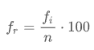

Estatística
A estatística é o campo da matemática que relaciona fatos e números em que há um conjunto de métodos que nos possibilita coletar dados e analisá-los, assim sendo possível realizar alguma interpretação deles. A estatística é dividida em duas partes: descritiva e inferencial. A estatística descritiva é caracterizada pela organização, análise e apresentação dos dados, enquanto a estatística inferencial tem como característica o estudo de uma amostra de determinada população e, com base nela, a realização de análises e a apresentação de dados.
Quando se estuda uma massa de dados é de frequente interesse interesse resumir resumir as informações informações de variáveis variáveis.
Costuma-se, frequentemente, para uma melhor compreensão compreensão dos mesmos, distribuí-los em classes ou intervalos determinando-se o número de indivíduos pertencentes a cada classe ou intervalo intervalo.
Com isso, podemos resumir e visualizar um conjunto conjunto de dados sem precisar levar em conta os valores individuais.
Uma distribuição de frequências pode ser apresentada por meio de tabelas que, por sua vez, podem ser representadas por meio de gráficos.
Definições:
Dados Brutos: Conjunto Conjunto de dados que ainda não foram numericamente numericamente organizados, organizados, obtidos obtidos após a crítica crítica dos valores valores.
Rol: É um arranjo dos dados brutos em ordem crescente.
Frequência absoluta simples (fi): É o número de observações observações que se encontra encontra presente presente em uma classe ou intervalo intervalo especifico especifico.
Frequência relativa (percentual) (fr): Representa o percentual de um certo valor na amostra. É calculada da seguinte forma:
Frequência acumulada (f ac): É a soma das frequências simples das classes ou dos valores anteriores.
Frequência percentual acumulada (f ra): É a soma das frequências frequências relativas percentuais das classes ou dos valores.
